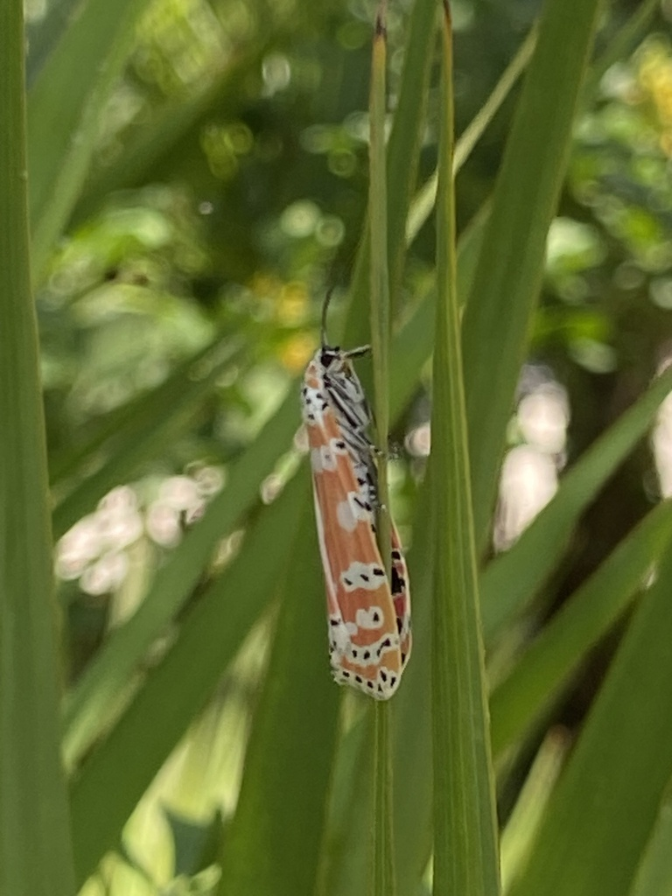

- A small moth flying by day in bright pink, orange, yellow, and white is the ornate bella moth — a rare moth you are more likely to see in sunshine than at a porch light.
- Its gaudy colors are a warning. The moth is toxic, and the pattern tells predators not to bother.
- The poison comes from its food. Caterpillars eat rattlebox plants and bank the plants' bitter alkaloids, which the adult keeps for life.
- There is a twist in its courtship: males pass some of that chemical defense to females as a wedding gift, helping protect the eggs.
Pink to crimson hindwings; forewings banded in orange, yellow, and white with small black-rimmed white spots.
Small, with a wingspan around 1.5 in (4 cm).
Flies by day, low over open vegetation.
Silent.
A small, brightly multicolored moth fluttering low through sunny weedy ground in daylight. The pink-and-orange palette and daytime flight set it apart from drab night-flying moths.
Caterpillars feed on rattlebox (Crotalaria) and related legumes, taking in the plants' toxins. Adults sip nectar.
Low over open, weedy ground and pond edges in sunshine, especially near any rattlebox or pea-family plants.
A warm-season moth, most likely from spring through fall.
Just watch and enjoy. Avoid handling its delicate wings, and the best help is leaving native rattlebox and wild margins in place.

- © Pammy63 (CC-BY-NC), via iNaturalist